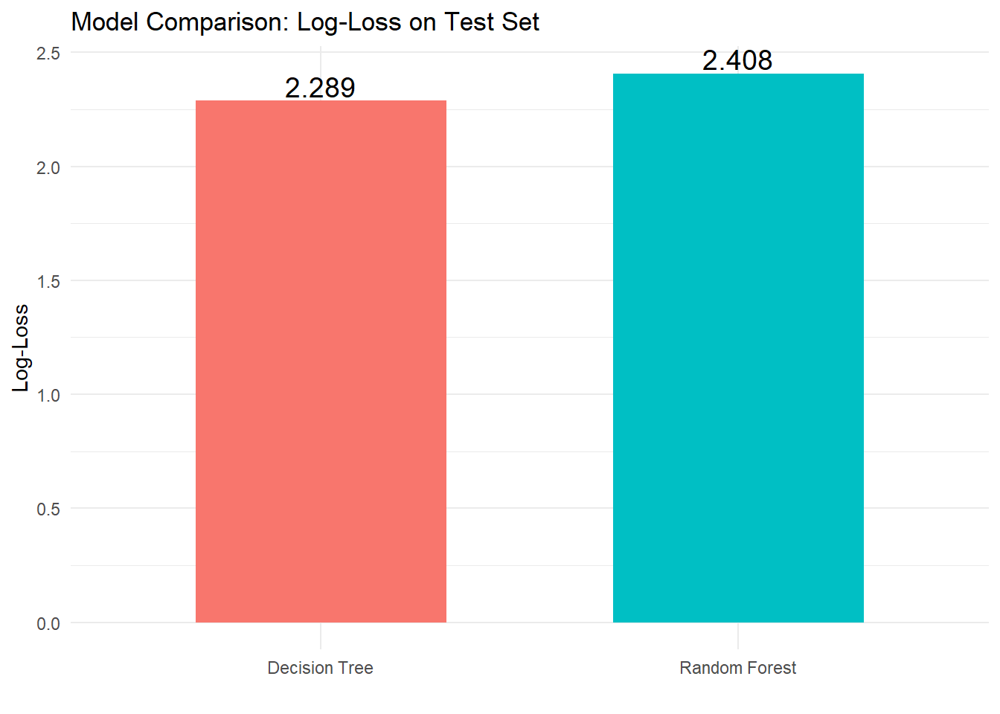

#Load libraries
library(tidyverse)
library(tidyr)
library(readr)
library(ggplot2)
library(dplyr)
library(knitr)
library(skimr)
library(purrr)
library(gt)
library(janitor)
library(dplyr)
library(stringr)
library(reshape2)
library(lubridate)
library(skimr)
library(tidymodels)
library(doParallel)
registerDoParallel()Predictive Modeling
Introduction:
Diabetes is a common chronic condition associated with substantial morbidity, mortality, and healthcare costs. Early identification of individuals at elevated risk can help target prevention and management efforts more efficiently. In this project, we work with a cross-sectional health survey dataset, in which the main outcome of interest is a binary indicator of diabetes status, Diabetes_binary` (1 = has diabetes, 0 = does not have diabetes).
On this section, we will focus on creating model for predicting the ‘Diabetes_binary’ variable. We will use log-loss as our metric to evaluate the models and select the best model.
Based on the exploratory data analysis, about 86% of the participants have no diabetes. That is, it in an imbalance data. Thus, I used stratified sampling to ensure that both sets have similar proportions of diabetes cases.
For the model, I’ve selected seven key predictors based on clinical relevance and exploratory data analysis. These predictors are High BP, BMI, Physical Activity, Age group, General Health, Smoking status and Education.
Task1: Read data
The cleaned data was already saved in the data folder of this project so, I’ll read it in.
diabetes_final<-readRDS("diabetes_final.rds")Task2: Split data
Split the data into a training (70% of the data) and test set (30% of the data). Set a seed to make things reproducible.
#Stratified sampling (This is used because the outcome is an imbalance outcome)
set.seed(123)
split <- initial_split(diabetes_final, prop = 0.7, strata = Diabetes_binary)
train_data <- training(split)
head(train_data) Diabetes_binary HighBP HighChol CholCheck BMI
1 Diabetes High BP High cholestrol Cholestrol checked in 5 yrs 30
2 Diabetes No high BP No high cholestrol Cholestrol checked in 5 yrs 25
3 Diabetes High BP High cholestrol Cholestrol checked in 5 yrs 28
4 Diabetes No high BP No high cholestrol Cholestrol checked in 5 yrs 23
5 Diabetes High BP No high cholestrol Cholestrol checked in 5 yrs 27
6 Diabetes High BP High cholestrol Cholestrol checked in 5 yrs 28
Smoker Stroke HeartDiseaseorAttack PhysActivity Fruits Veggies
1 Yes No Yes No Yes Yes
2 Yes No No Yes Yes Yes
3 No No No No No Yes
4 Yes No No Yes No No
5 No No No Yes Yes Yes
6 Yes No Yes No No Yes
HvyAlcoholConsump AnyHealthcare NoDocbcCost GenHlth MentHlth PhysHlth
1 No Yes No Poor 30 30
2 No Yes No Good 0 0
3 No Yes No Fair 0 0
4 No Yes No Very good 0 0
5 No Yes No Excellent 0 0
6 No Yes No Fair 0 0
DiffWalk Sex Education Age_group Income_group
1 Yes Female Some College 60-64 <$10,000
2 No Male College Grad 80-99 >=$75,000
3 Yes Female Grade 12 or GED 70-74 <$50,000
4 No Male Some College 50-54 <$50,000
5 No Female Some College 80-99 <$25,000
6 No Male Grades 1-8 75-79 <$25,000test_data <- testing(split)
head(test_data) Diabetes_binary HighBP HighChol CholCheck
1 No diabetes No high BP No high cholestrol No cholestrol Check in 5 yrs
2 No diabetes High BP High cholestrol Cholestrol checked in 5 yrs
3 No diabetes High BP High cholestrol Cholestrol checked in 5 yrs
4 No diabetes High BP High cholestrol Cholestrol checked in 5 yrs
5 No diabetes High BP High cholestrol Cholestrol checked in 5 yrs
6 No diabetes No high BP No high cholestrol Cholestrol checked in 5 yrs
BMI Smoker Stroke HeartDiseaseorAttack PhysActivity Fruits Veggies
1 25 Yes No No Yes No No
2 28 No No No No Yes No
3 25 Yes No No Yes No Yes
4 34 Yes No No No Yes Yes
5 28 Yes No No No Yes Yes
6 32 No No No Yes Yes Yes
HvyAlcoholConsump AnyHealthcare NoDocbcCost GenHlth MentHlth PhysHlth
1 No No Yes Good 0 0
2 No Yes Yes Poor 30 30
3 No Yes No Good 0 0
4 No Yes No Good 0 30
5 No Yes No Good 6 0
6 No Yes No Very good 0 0
DiffWalk Sex Education Age_group Income_group
1 No Female College Grad 50-54 <$10,000
2 Yes Female Grade 12 or GED 60-64 >=$75,000
3 Yes Female Grade 12 or GED 70-74 <$25,000
4 Yes Female Some College 65-69 <$10,000
5 Yes Female Grade 12 or GED 60-64 <$50,000
6 No Female College Grad 40-44 >=$75,000Task3: Cross-validation set up (5-fold, stratified)
Split into 5 folds, Each fold is used as a validation set once while the remaining 4 folds are used for training.
set.seed(124)
cv_folds <- vfold_cv(train_data, v = 5, strata = Diabetes_binary)
cv_folds# 5-fold cross-validation using stratification
# A tibble: 5 × 2
splits id
<list> <chr>
1 <split [142059/35516]> Fold1
2 <split [142059/35516]> Fold2
3 <split [142060/35515]> Fold3
4 <split [142061/35514]> Fold4
5 <split [142061/35514]> Fold5##Task 4 Recipe: Basic recipe using all predictors.
# since classification Tree and random forest models can take on factor variables, we didn't do the preprocessing for creating dummy variables.here, selected the predictors for the model.
diabetes_recipe <- recipe(Diabetes_binary ~ HighBP + BMI + PhysActivity + Age_group +
GenHlth + Smoker + Education, data = train_data) %>%
step_zv(all_predictors()) #to remove predictors with zero variance sd they are not important in the modeling
diabetes_recipe── Recipe ──────────────────────────────────────────────────────────────────────── Inputs Number of variables by roleoutcome: 1
predictor: 7── Operations • Zero variance filter on: all_predictors()Task4:
A.Classification Tree
Classification Tree model is a type of supervised learning algorithm that is used to predict categorical outcome. So in our data, predicting whether participant has diabetes or not.It works by repeatedly splitting the data into smaller, more homogeneous groups.At each step, the algorithm selects the variable and cutoff that best separate the outcome categories—typically using metrics like Gini impurity or classification error. The result is a tree-like structure where each internal node represents a decision rule, each branch represents an outcome of that decision, and each terminal leaf represents a predicted class. Even though they are easy to interpret, single trees can be unstable, which means small changes in the data can produce different split.
Model specification (with parameters to tune)
We’ll use tree depth and cost-complexity (cp) to optimize the model’s performance .
tree_model <- decision_tree(
cost_complexity = tune(),#pruning parameter
tree_depth = tune(),#how many levels from the root node to the final node
min_n = 5 # minimum number of samples to split a node
) %>%
set_engine("rpart") %>%
set_mode("classification")
tree_modelDecision Tree Model Specification (classification)
Main Arguments:
cost_complexity = tune()
tree_depth = tune()
min_n = 5
Computational engine: rpart Grid of tuning parameters ( custom grid)
create grid of possible values for the model on how much to prune and how deep to let it grow. we’re providing R with Ranges are the smallest and largest values
tree_grid <- grid_regular(
cost_complexity(range = c(-5, -1)),
tree_depth(range = c(2, 10)),
levels = 5
)
tree_grid# A tibble: 25 × 2
cost_complexity tree_depth
<dbl> <int>
1 0.00001 2
2 0.0001 2
3 0.001 2
4 0.01 2
5 0.1 2
6 0.00001 4
7 0.0001 4
8 0.001 4
9 0.01 4
10 0.1 4
# ℹ 15 more rowsWorkflow for the tree
Build a workflow to combine the pre-processed data with the model
tree_wf <- workflow() %>%
add_model(tree_model) %>%
add_recipe(diabetes_recipe)
tree_wf══ Workflow ════════════════════════════════════════════════════════════════════
Preprocessor: Recipe
Model: decision_tree()
── Preprocessor ────────────────────────────────────────────────────────────────
1 Recipe Step
• step_zv()
── Model ───────────────────────────────────────────────────────────────────────
Decision Tree Model Specification (classification)
Main Arguments:
cost_complexity = tune()
tree_depth = tune()
min_n = 5
Computational engine: rpart Tuning using LOG-LOSS
Here, we are trying all the model settings in the grid created, tests each one using cv, and finds the combination that gives the best performance.
# Set up parallel backend
cl <- makeCluster(parallel::detectCores() - 1)
registerDoParallel(cl)
# Control settings for tuning
ctrl <- control_grid(
save_pred = FALSE,
save_workflow = FALSE,
verbose = FALSE,
allow_par = TRUE
)
# Run tuning
set.seed(112)
tree_res <- tune_grid(
tree_wf,
resamples = cv_folds,
metrics = metric_set(mn_log_loss),
grid = tree_grid,
control = ctrl
)
# Stop cluster when done
stopCluster(cl)
registerDoSEQ()
# collect metrics
tree_metrics <- collect_metrics(tree_res)
head(tree_metrics)# A tibble: 6 × 8
cost_complexity tree_depth .metric .estimator mean n std_err .config
<dbl> <int> <chr> <chr> <dbl> <int> <dbl> <chr>
1 0.00001 2 mn_log_loss binary 0.404 5 9.73e-6 pre0_m…
2 0.00001 4 mn_log_loss binary 0.364 5 1.01e-2 pre0_m…
3 0.00001 6 mn_log_loss binary 0.352 5 1.37e-3 pre0_m…
4 0.00001 8 mn_log_loss binary 0.337 5 9.32e-4 pre0_m…
5 0.00001 10 mn_log_loss binary 0.343 5 2.48e-3 pre0_m…
6 0.0001 2 mn_log_loss binary 0.404 5 9.73e-6 pre0_m…Select the best model
this picks the best performing model from the tuning outputs.
best_tree <- select_best(tree_res, metric = "mn_log_loss")
best_tree# A tibble: 1 × 3
cost_complexity tree_depth .config
<dbl> <int> <chr>
1 0.00001 8 pre0_mod04_post0Final tree workflow
Here we’re updating the work flow with the best performing hyperparameter values.
final_tree_wf <- finalize_workflow(tree_wf, best_tree)
final_tree_wf══ Workflow ════════════════════════════════════════════════════════════════════
Preprocessor: Recipe
Model: decision_tree()
── Preprocessor ────────────────────────────────────────────────────────────────
1 Recipe Step
• step_zv()
── Model ───────────────────────────────────────────────────────────────────────
Decision Tree Model Specification (classification)
Main Arguments:
cost_complexity = 1e-05
tree_depth = 8
min_n = 5
Computational engine: rpart B. Random Forest
A random forest is an ensemble method that builds many decision trees and combines their predictions to produce a more accurate and stable result. Each tree is trained on a bootstrapped sample, and at each split, the algorithm considers only a random subset of predictors. This randomness makes the trees more diverse, which helps the forest capture different patterns in the data.It also helps to decorrelates the trees which in turn reduce variance and improve accuracy. Random forests are powerful because they reduce the common weaknesses of single classification trees—especially overfitting and instability. By averaging or voting across many trees, the model becomes more robust and performs better on new, unseen data.
Random forest specification (with tuning)
We’ll tune on: mtry (number of predictor variables sampled at each split) min_n (minimum observations required at a node)
rf_model <- rand_forest(
mtry = tune(),
min_n = tune(),
trees = 100
) %>%
set_engine("ranger", importance = "impurity") %>%
set_mode("classification")Random Forest Grid
This creates 25 combination of mtry and min_n values for the model to test to find the best setting.
rf_grid <- grid_regular(
mtry(range = c(2, 7)),
min_n(range = c(5, 50)),
levels = 5
)Random Forest Workflow
Build a workflow to combine the pre-processed data with the model
rf_wf <- workflow() %>%
add_model(rf_model) %>%
add_recipe(diabetes_recipe)Tune with LOG-LOSS
Here, we are trying all the model settings in the grid created, tests each one using cv, and finds the combination that gives the best performance.
cl <- makeCluster(parallel::detectCores() - 1)
registerDoParallel(cl)
ctrl <- control_grid(
save_pred = FALSE,
save_workflow = FALSE,
verbose = FALSE,
allow_par = TRUE
)
set.seed(129)
rf_res <- tune_grid(
rf_wf,
resamples = cv_folds,
metrics = metric_set(mn_log_loss),
grid = rf_grid,
control = ctrl
)
stopCluster(cl)
registerDoSEQ()
# collect metrics
ref_metrics <- collect_metrics(rf_res)
head(ref_metrics)# A tibble: 6 × 8
mtry min_n .metric .estimator mean n std_err .config
<int> <int> <chr> <chr> <dbl> <int> <dbl> <chr>
1 2 5 mn_log_loss binary 0.323 5 0.000475 pre0_mod01_post0
2 2 16 mn_log_loss binary 0.323 5 0.000467 pre0_mod02_post0
3 2 27 mn_log_loss binary 0.323 5 0.000537 pre0_mod03_post0
4 2 38 mn_log_loss binary 0.323 5 0.000458 pre0_mod04_post0
5 2 50 mn_log_loss binary 0.323 5 0.000532 pre0_mod05_post0
6 3 5 mn_log_loss binary 0.331 5 0.000400 pre0_mod06_post0Select best random forest
best_rf <- select_best(rf_res, metric = "mn_log_loss")
best_rf# A tibble: 1 × 3
mtry min_n .config
<int> <int> <chr>
1 2 50 pre0_mod05_post0Final random forest workflow
final_rf_wf <- finalize_workflow(rf_wf, best_rf)C.Evaluate models on the test data
Classification Tree
here, we’re fitting the final classification tree model on the training dataset, predict probability of diabetes on the test data and calculate the log loss.
tree_fit <- final_tree_wf %>% fit(data = train_data)
tree_pred <- predict(tree_fit, test_data, type = "prob") %>%
bind_cols(test_data %>% select(Diabetes_binary))
names(tree_pred)[1] ".pred_No diabetes" ".pred_Diabetes" "Diabetes_binary" mn_log_loss(tree_pred, truth = Diabetes_binary, .pred_Diabetes)# A tibble: 1 × 3
.metric .estimator .estimate
<chr> <chr> <dbl>
1 mn_log_loss binary 2.29Random Forest
here, we’re fitting the final random forest model on the training dataset, predict probability of diabetes on the test data and calculate the log loss.
rf_fit <- final_rf_wf %>% fit(data = train_data)
rf_pred <- predict(rf_fit, test_data, type = "prob") %>%
bind_cols(test_data %>% select(Diabetes_binary))
mn_log_loss(rf_pred, truth = Diabetes_binary, .pred_Diabetes)# A tibble: 1 × 3
.metric .estimator .estimate
<chr> <chr> <dbl>
1 mn_log_loss binary 2.41D. Generating Comparison Tables and Plots
Comparison Table (Log-Loss on Test Set)
# Compute log-loss for each model
tree_logloss <- mn_log_loss(tree_pred, truth = Diabetes_binary, .pred_Diabetes)
rf_logloss <- mn_log_loss(rf_pred, truth = Diabetes_binary, .pred_Diabetes)
comparison_table <- tibble(
Model = c("Decision Tree", "Random Forest"),
LogLoss = c(tree_logloss$.estimate, rf_logloss$.estimate)
)
comparison_table# A tibble: 2 × 2
Model LogLoss
<chr> <dbl>
1 Decision Tree 2.29
2 Random Forest 2.41Plot Tuning Results for Each Model
Tree tuning plot
Shows how changing depth & cost-complexity influenced log-loss.
autoplot(tree_res) +
ggtitle("Classification Tree – Log-Loss Across Tuning Grid")
Random Forest tuning plot
Shows effect of different mtry and min_n.
autoplot(rf_res) +
ggtitle("Random Forest – Log-Loss Across Tuning Grid")
Side-by-side comparison plot (best vs best)
comparison_table %>%
ggplot(aes(x = Model, y = LogLoss, fill = Model)) +
geom_col(width = 0.6) +
geom_text(aes(label = round(LogLoss, 3)), vjust = -0.2, size = 5) +
labs(
title = "Model Comparison: Log-Loss on Test Set",
y = "Log-Loss",
x = ""
) +
theme_minimal() +
theme(legend.position = "none")
Based on the log-loss result above, the classification tree performed better than the random forest on the test set. The test-set log-loss values were approximately 2.3 for the decision tree and 2.4 for the random forest, indicating that the tree produced better-tuned probability predictions for predicting diabetes in the dataset.